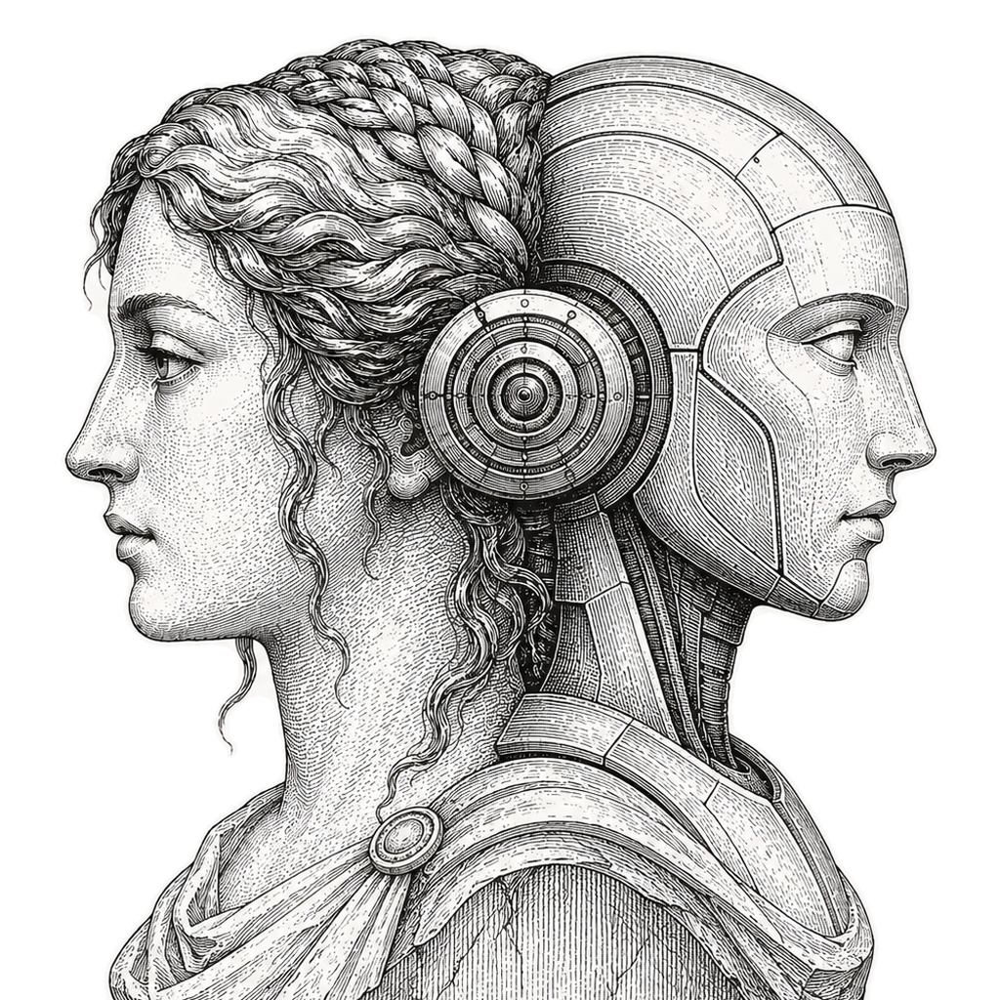

It mines your real Claude Code, Codex, Cursor and Copilot sessions into a you.md your agent reads before every task. Not what you told it. What your work already proved.

Your CLAUDE.md, your rules file, the preferences you remembered to write down on a good day.
Mined from the raw session logs: every rejection, every "that's not done", every time you asked for proof.
asks for proof more the closer a task gets to shipping, and never on day one
This is one person's mine. Yours is pulled from your own logs and will read nothing like it.
Pulls every message you typed from your local Claude Code, Codex, Cursor, Copilot CLI and OpenCode logs. Strips tool output, pasted errors, file dumps. Keeps only your words.
Agents read each slice of your history and pull the repeated traits: how you define done, what you reject, when you ask for proof, how you actually talk.
you.mdThe repeated traits merge into one profile, with dated receipts from real sessions. Installs as a skill, so your agent reads it before every task.
Emulo reads your private session logs, so it is built to never move them. Everything runs on your machine, secrets are redacted before a single line is written, and the profile stays in a local file you can open, edit, or delete.
One command. Your logs become the profile your agent reads first.